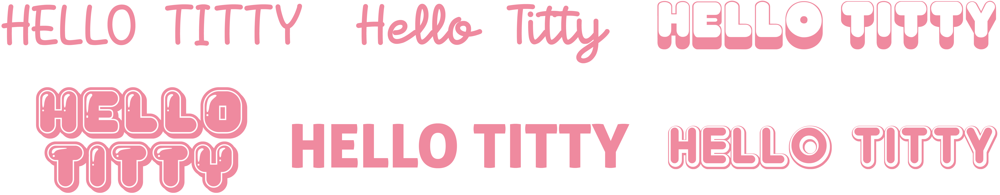

Russelogo
Hallo Titty 2024
Frivilligarbeid
I 2024 designet jeg en russelogo for lillesøsteren min sin russegruppe «Hello Titty». De hadde hverken buss eller van, så det eneste de ønsket fra meg var en logo til å bruke på gensere, pannebånd og klistremerker.
Resultatet ble en relativt enkel logo som består av en Hello Kitty inspirert jente, et stjernemønster og rød tekst, som passer på ulike flater og fungerer bra sammen med flere bakgrunnsfarger. Prosjektet er utenom det jeg vanligvis driver med, men jeg synes det var en gøy oppgave!
Verktøy: Procreate & Illustrator
Innsiktsarbeid
Før jeg startet selve designprosessen med logoen, brukte jeg litt tid på innsiktsarbeid. Russegruppa ønska seg en logo med en tegning, istedenfor bare tekst, så jeg så gjennom mange tidligere russelogoer med denne typen stil, for å skjønne hva slags uttrykk de var ute etter. I tillegg fant jeg inspirasjon til selve tegningen på Pinterest.
Designprosess
Når jeg starta selve designprosessen, var det første jeg gjorde å bestemme hva slags skrifttype som passet best sammen med navnet. Jeg endte opp med skrifttypen nederst til venstre, som heter «Double Bubble».
Utvikling
Deretter gikk jeg videre til selve tegningen. Jeg starta først med å lage en tegning av den ekte Hello Kitty, men fikk vite at de heller ville ha en jente med litt samme type vibe. Derfor endret jeg tegningen og la til flere detaljer for å gjøre logoen komplett.